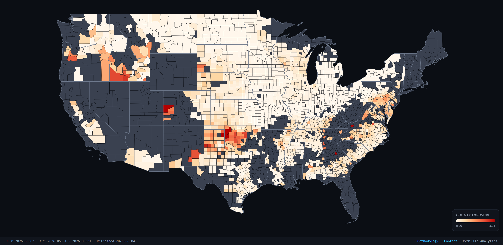
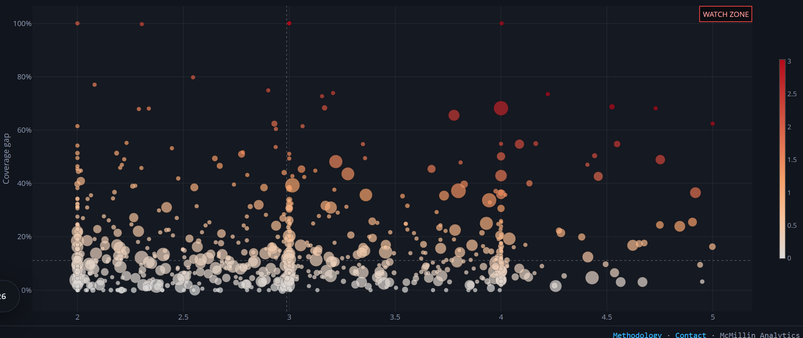

U.S. Drought Exposure Monitor
USDA NASS
RMA SoB
U.S. Drought Monitor
NOAA CPC
A county-level view of where drought severity is colliding with thin federal crop-insurance coverage across U.S. row crops. Combines USDA NASS, RMA, the U.S. Drought Monitor, and NOAA's CPC outlook into one map and watch list. Refreshes weekly.
Read the methodology →